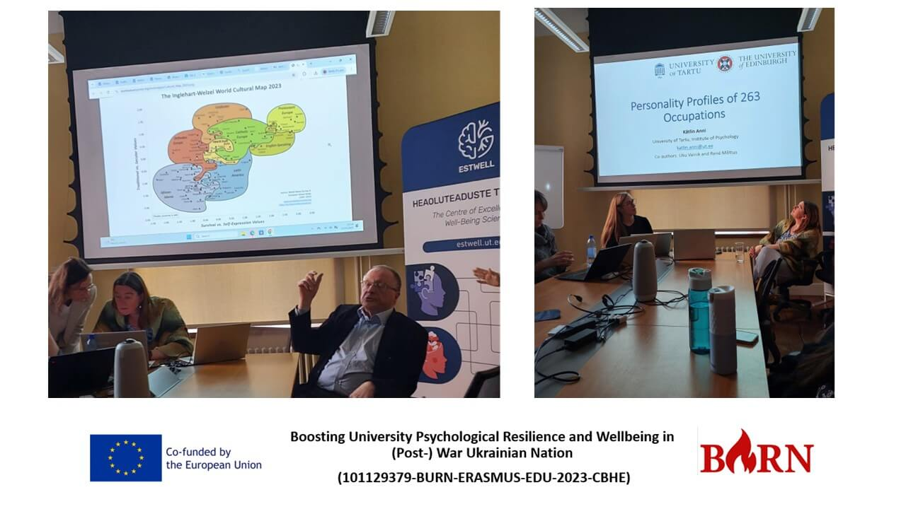

Webinar 3 "Working with Groups" at the University of Tartu (May 20, 2024)
Our study visit to the University of Tartu began with an insightful session at the Institute of Psychology and Communication, where we explored the transformation of psychological education in Estonia. A key focus was overcoming the Soviet legacy and reshaping academic programs at the bachelor's and master's levels.

Psychology at Tartu has deep academic roots. Professor Emil Kraepelin, a student of Wilhelm Wundt, played a pivotal role in establishing experimental psychology at the university. His work laid the foundation for understanding the brain’s interaction with mental disorders. The Faculty of Psychology, officially established in 1968, underwent significant reforms after Estonia regained independence. Transitioning from the Soviet Candidate of Sciences and Doctoral system, Estonian psychology education aligned itself with modern international standards.
Key Academic Transformations:
Curriculum restructuring: Addressing topic repetition and removing Soviet-era influences.
Assessment reforms: Updating final exams to reflect contemporary psychological competencies.
Clinical psychology revamp: Introducing new training models and retraining practitioners.
Global integration: Emphasizing English-language academic writing, and improving representation in international citation metrics and rankings.
Research Highlights:
We also explored Estonia's contributions to global research through:
- The World Values Survey (WVS) – analyzing shifts in values, beliefs, and cultural norms across societies
- The Personality Profiles of 263 Occupations study – featuring genetic data from over 200,000 Estonians (20% of the adult population).
Key Takeaway:
A critical discussion point was the transformation of psychodiagnostic tools in psychological science.
An inspiring first day! Looking forward to more exchanges on best practices in psychology education.